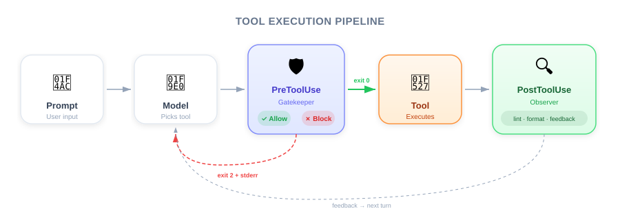
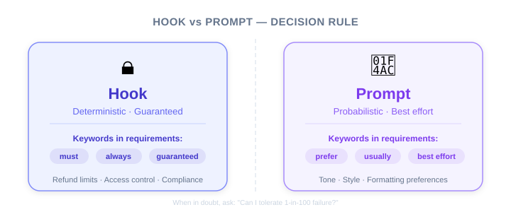

| Item | Details |
|---|---|
| Exam Coverage | D3 — Claude Code Configuration & Workflows (20% of exam) |
| Task Statements | 3.2 (custom commands & hooks), 1.5 (Agent SDK hooks) |
| Course Source | claude-code-in-action / 05-hooks / Lesson 14 |
Hooks are Claude Code's "quality control checkpoints" and "automated triggers." Think of them as a business rule engine inside your product: before an AI action, you can intercept and review it (Pre); after an action, you can trigger quality checks (Post). PMs need to understand this mechanism because it determines what AI behaviors can be guaranteed vs. what is merely best-effort.

As a PM, you don't need to write hooks yourself, but you do need to know:
This directly affects the acceptance criteria and risk assessments you write in PRDs.
| PreToolUse Hook | PostToolUse Hook | Prompt Instruction | |
|---|---|---|---|
| Analogy | Airport security — fail the check, you don't board | Customs on arrival — already landed, but can be inspected | In-flight announcement: "Please fasten your seatbelt" |
| Guarantee Level | 100% certain to execute | 100% certain to execute | 95–99% (AI may ignore) |
| Can it block the action? | Yes, can prevent the action | No (already happened), but can clean up | Cannot be guaranteed |
| Use Cases | Compliance, security, access control | Quality checks, formatting, notifications | Style preferences, tone suggestions |
🎯 Core Exam Philosophy (PMs must remember)
- Architecture > Prompt — If structure can solve it, don't rely on prompting
- Deterministic > Probabilistic — If code can guarantee it, don't rely on AI self-discipline

You are planning an AI customer support system with the following requirements:
| Requirement | Implementation | Why |
|---|---|---|
| Refunds > $500 must go to human review | PreToolUse hook — intercept process_refund, block and escalate if amount exceeds threshold |
Compliance requirement — zero tolerance for slipping through |
| Replies should have a friendly tone | Prompt instruction | Preference-based requirement — occasional deviation is acceptable |
| Log every reply to CRM | PostToolUse hook — automatically write to CRM after each reply | Process automation — guaranteed to run every time |
| Prioritize self-service options | Prompt instruction | Strategic preference — flexibility is acceptable |
💡 PM Decision Framework
When writing a PRD, ask yourself: "If the AI gets this behavior wrong 1 out of 100 times, what are the consequences?"
- Severe consequences (financial loss, compliance violation) → must use a hook
- Minor consequences (slightly off tone, inconsistent formatting) → prompt instruction is sufficient
Hooks have three configuration levels — this matters to PMs because it determines team governance:
| Level | Who Manages It | Typical Use | PM's Concern |
|---|---|---|---|
Global (~/.claude/settings.json) |
Individual developer | Personal preferences (auto-format) | Cannot control — varies per person |
Project shared (.claude/settings.json) |
Tech Lead / Team | Team standards (lint, tests) | Can require team-wide consistency |
Project local (.claude/settings.local.json) |
Individual | Personal overrides | Cannot enforce |
💡 PM Takeaway
If your acceptance criteria requires a hook to be active, make sure it lives at the Project shared level — not a personal setting.
Hooks appear across multiple exam domains:
| Domain | How Hooks Are Tested |
|---|---|
| D1 Agentic Architecture (27%) | Agent SDK hook mechanism — PostToolUse for data normalization, PreToolUse for policy enforcement |
| D3 Claude Code Config (20%) | Settings hierarchy, /hooks command, matcher syntax |
| D5 Reliability (15%) | Hook as a validation gate to ensure quality between pipeline steps |
A few nuances from the instructor's video that PMs should note:
/src/auth.ts with the following content..." This means hooks can make very granular decisions.Your AI customer support agent handles returns and refunds. Company policy requires identity verification before any financial operation. This rule is currently enforced through system prompt instructions. A customer has reported receiving a refund without being asked to verify their identity. What is the recommended fix?
process_refund until get_customer returns a verified statusYour team has integrated Claude Code into a CI pipeline for automated PR review. Engineers have reported that Claude sometimes modifies migration files, causing deployment issues. What would you recommend?
migrations/ directoryA coordinator agent distributes research tasks to multiple subagents. Different backend APIs return dates in different formats (Unix timestamp, ISO 8601, locale-specific string). The synthesis subagent frequently misinterprets dates. What is the best approach?